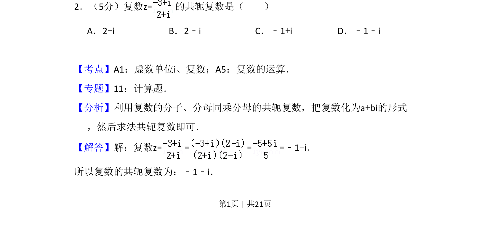
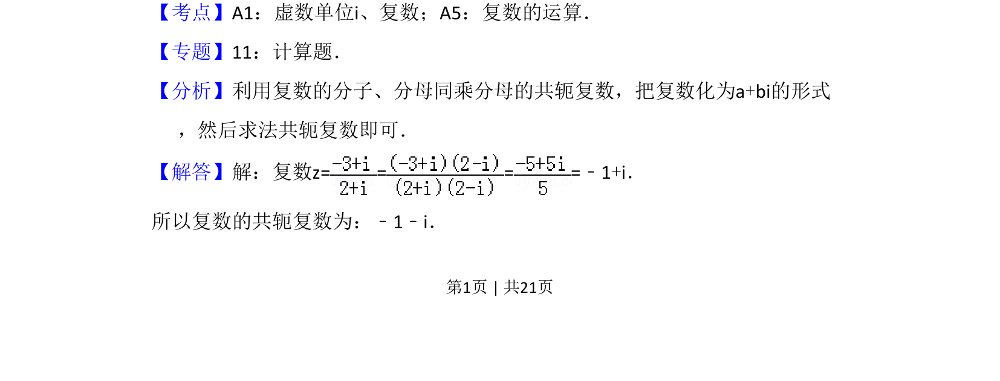
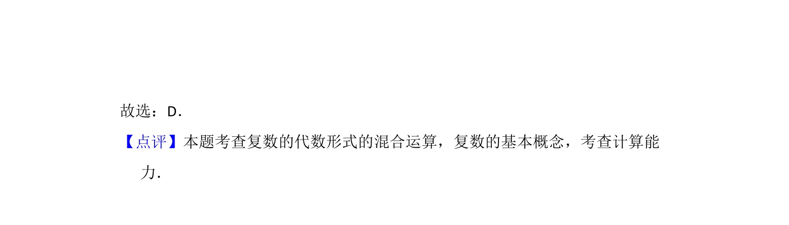

考点：复数运算 共轭复数 虚数单位

本题考查复数的除法运算及其共轭复数的求法。


📄 原 PDF 第 1 页：
素材/真题/吉林/2008-2024·（吉林）数学高考真题/2012年高考数学试卷（文）（新课标）（解析卷）.pdf
2．（5分）复数z=的共轭复数是（ ） A．2+i B．2﹣i C．﹣1+i D．﹣1﹣i
【考点】A1：虚数单位i、复数；A5：复数的运算．菁优网版权所有 【专题】11：计算题． 【分析】利用复数的分子、分母同乘分母的共轭复数，把复数化为a+bi的形式 ，然后求法共轭复数即可． 【解答】解：复数z= = = =﹣1+i． 所以复数的共轭复数为：﹣1﹣i．